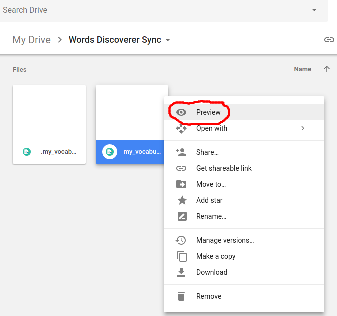

If you enable Google Drive synchronization, your vocabulary will be automatically backed up to your Google drive each time you add or remove words from it. Maximum sync frequency is once per 30 minutes, although you can always press "Sync now" button to force manual synchronization. If you use Words Discoverer extension in multiple browsers, their vocabularies will be synchronized through your Google Drive. Words Discoverer files will be saved to the "Words Discoverer Sync" folder in your Google Drive root directory. Your vocabulary can be found in "my_vocabulary.txt" file. ".my_vocabulary.backup" is a technical file which stores all added and deleted words. To stop synchronization press the "Stop Sync" button which will appear once synchronization is enabled. If extension icon shows red "err" badge, it means that synchronization has stopped due to an error. In this case you can try to press "Synchronize Now" button again or, if it doesn't help, try to restart the browser. The most convenient way to view your vocabulary in google drive without downloading is to use "Preview" button in the google drive file menu, see the screenshot below: 